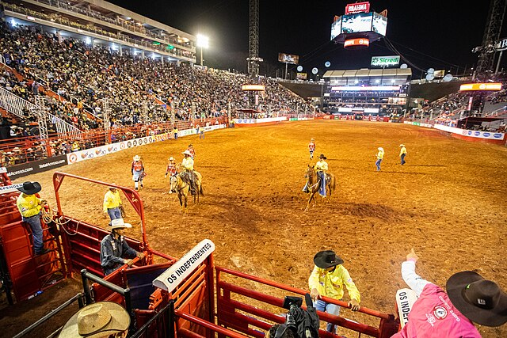

Início
 64ª Festa do Peão de BarretosPor que a agricultura merece ser comemorada no Brasil?
Comemorar a agricultura é uma forma de reconhecer o trabalho duro dos agricultores e reforçar a ponte entre o urbano e o rural. Comemorar a agricultura é uma forma de promover a conscientização sobre questões relacionadas à segurança alimentar, à agricultura sustentável, ao desenvolvimento rural e ao combate à fome. Comemorar a agricultura é uma forma de agradecer aos agricultores e valorizá-los como profissionais que movem a economia do país.
Fonte:
Serasa Experian - Dia Mundial da Agricultura
Viqua - Dia do Campo